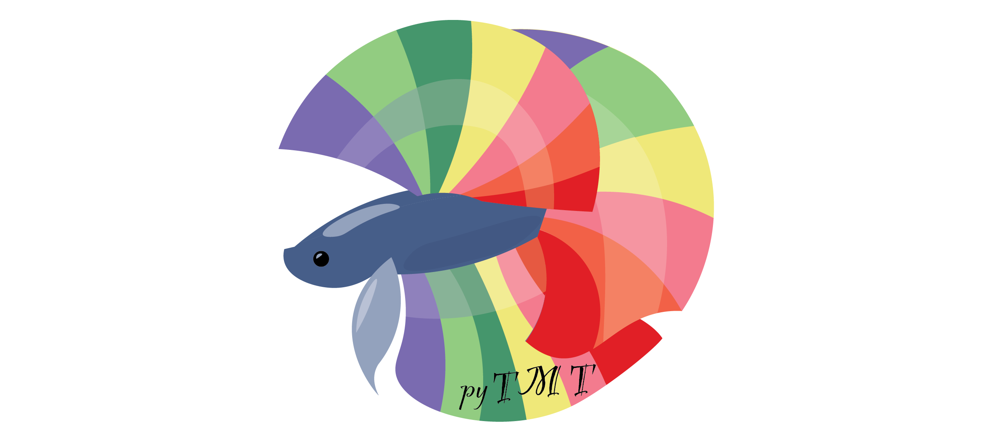

pyTMT - Tandem Mass Tag Quantifier
pyTMT - automated tandem mass tag (TMT) data quantification for Comet and Percolator.
Abstract
This page provides the documentation for the pyTMT package, which is a tool for analyzing tandem mass tag (TMT) labeled quantitative proteomics data.
- Edward Lau Lab, University of Colorado School of Medicine
- Maggie Lam Lab, University of Colorado School of Medicine

About pyTMT
Pytmt returns ms2 tandem mass tag quantification values from Crux/Percolator output and mzML mass spectrometry files. It then performs contamination matrix correction for TMT tags.
Downloads
Latest Updates
v.0.4.1
- Added support for TMT 18-plex
- Added non-negative least square method for contamination correction
See Change Log for details.
The latest version and source code of pyTMT can be found on github: https://github.com/Lau-Lab/pytmt.
See the Documentation page for instructions.
Contributors
- Edward Lau, PhD - ed-lau
- Maggie Lam, PhD - Maggie-Lam
Citations
- Proteomic signatures of acute oxidative stress response to paraquat in the mouse heart. Dostal V, Wood SD, Thomas CT, Han Y, Lau E, Lam MPY. Scientific Reports 10, 18440 (2020) doi: 10.1038/s41598-020-75505-8